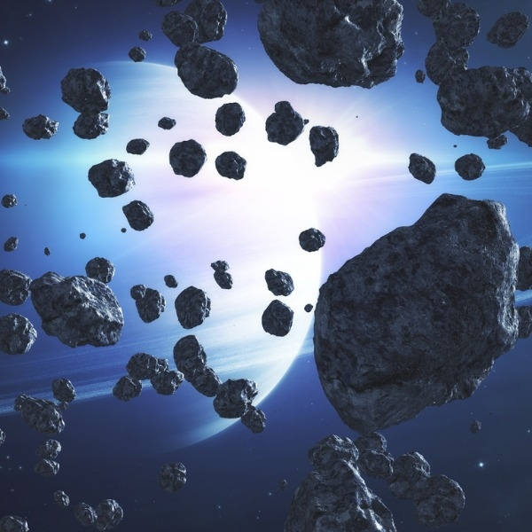

The Blue Crystal
After finding the blue crystal, you head back to your spaceship and begin your journey to find the blue crystal. Space goes on forever, how am I ever going to find it. After passing some planets, you come across saturn and for some reason it intrigues you to go to it. Although, you also see a bunch of asteroids together to the left. Maybe one way leads to the crystal?


Which way do you go?